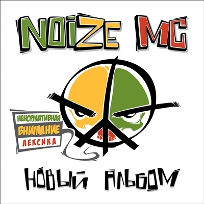

Біографія
Нагороди Noize MC
- Переможець 7-го офіційного батла Hip-hop.ru.
- Лауреат премії RAMP 2009 каналу A-ONE в категорії «Respect RUнета».
- 41-е місце в рейтингу «50 зірок» журналу Forbes (2010 р.).
- Член списку «Найбільш авторитетні люди Росії - 2010" дослідницького проекту журналу «Русский репортер».
- Номінант «Кращий російський артист» Церемонія вручення премії MTV Europe Music Awards 2010 року.
- Лауреат щорічної премії «Людина дощу», яку вручають радіостанцією "Срібний дощ" за "публічний протест проти свавілля влади».
- Переможець в конкурсах «Кращий артист року» і «Кращий альбом року» за версією телеканалу A-One (грудень 2013 р.).
- Переможець в номінації «Хіп-хоп року» премії «Music Box-2015» (листопад 2015 г.)
- Переможець в номінації «Шоу року» премії «Music Box 2016» за хіп-хоп-оперу «Орфей і Еврідіка» (листопад 2016 г.)
| Рік | Назва альбому | Найвідоміші пісні | Обкладинка альбому |
|---|---|---|---|
| 2008 | The Greatest Hits Vol. 1 |
|
|
| 2010 | Последний альбом |
|

|
| 2012 | Новый альбом |
|
 |
| 2013 | Неразбериха |
|

|
| 2016 | Царь горы |
|

|
Склад групи
Іван «Noize MC» Алексєєв
вокал, гітара, клавішні (2003 - теперішній час)
Олександр «Кислий» Кислинський
бас-гітара, бек-вокал (2003 - теперішній час)
Шот aka «DJ Stufford»
скретчінг, бітбокс, бек-вокал, гітара (2013 - теперішній час)
Володимир Зінов'єв
барабани, перкусія (2017 - теперішній час)
Станіслав «DJ Mos» Аммосов
скретчінг, семплінг (2012-2013)

Павло «Pa$hock» Тетерін
гітара (2004-2005), ударні (2005-2014)
Михайло Козодаєв
ударні (2014-2017)
«Хіпхопера: Орфей & Еврідіка»
Онлайн-трансляція відкритої репетиції хіпхопери «Орфей & Еврідіка» з легендарного Тон-Ательє 3 «Червоного Квадрата» в Останкіно:
Noize MC про пісню, яка відкриває хіпхоперу:
«Уже заканчивая работу над записью хипхоперы «ΘΡΦΣЙ & ЭΒΡИΔИΚΑ», я вдруг понял, что в моей истории не хватает некой отправной точки — своеобразного манифеста, озвучивающего основные принципы главного героя, его мотивы и моральные установки. Нужно было сначала объяснить, кто он, чем живёт, во что верит, что любит, что ненавидит — а только потом уже отправлять его в беспощадную мясорубку сюжета, где испытание медными трубами проверит на прочность каждый из его жизненных постулатов. Тогда я просто вспомнил, о чём сам волновался и мечтал, выступая на Арбате в середине нулевых, — и получилась песня «Голос & струны». Клип мы поехали снимать в Афины: я взял минимум аппаратуры и несколько дней играл там на площадях и пешеходных улицах, знакомясь и устраивая джемы с местными уличными музыкантами. А в последний съёмочный день мы решили устроить концерт побольше прямо в одном из дворов неподалёку от дома, где жили, — там была колоритная сцена прямо рядом с детской площадкой. Днём написали об этом в нескольких афинских русскоязычных пабликах и наших соц.сетях — вечером обалдели от того, сколько людей пришло))»